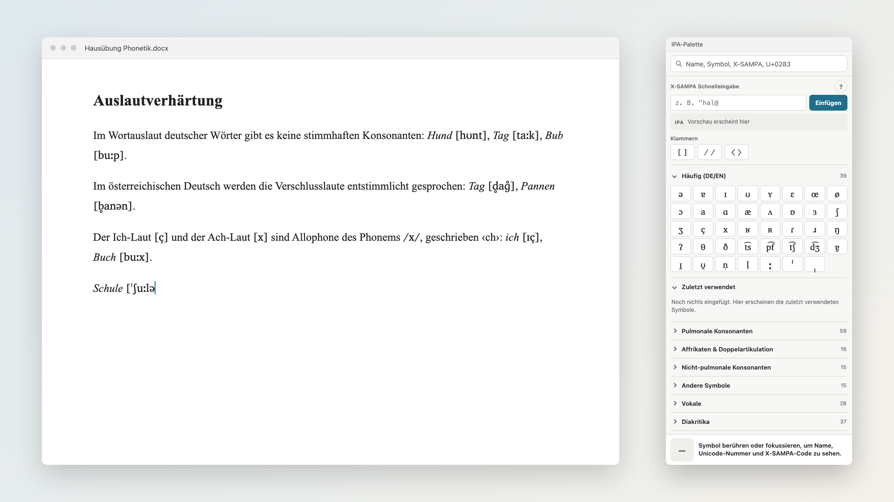

IPA-Palette im Microsoft Store
Anleitung zur Veröffentlichung · Stand 24. Oktober 2026
Kurz: Konto anlegen → Namen reservieren → drei Werte an Claude schicken → fertiges Paket hochladen → Texte einfügen → einreichen. Kosten: keine. Prüfung durch Microsoft: meist 1–3 Tage.
1 · Entwicklerkonto anlegen
- storedeveloper.microsoft.com öffnen → Get started.
- Mit einem privaten Microsoft-Konto anmelden (kein Uni-Konto).
- Kontotyp Einzelperson (Individual) wählen. Seit September 2025 ist das kostenlos und ohne Kreditkarte.
- Identität bestätigen: Ausweis scannen und Selfie aufnehmen.
- Anzeigename des Herausgebers festlegen, z. B. „Jeremias Wilcke“. Dieser Name steht später im Store unter der App.
2 · App-Namen reservieren
- In Partner Center → Apps und Spiele → Neues Produkt → MSIX- oder PWA-App.
- Name: IPA-Palette → Produktnamen reservieren.
3 · Drei Werte an Claude schicken
In der App → Produktverwaltung → Produktidentität stehen:
| Package/Identity/Name | z. B. 12345JeremiasWilcke.IPA-Palette |
| Package/Identity/Publisher | beginnt mit CN=, lange Zeichenkette |
| Package/Properties/PublisherDisplayName | z. B. Jeremias Wilcke |
Claude trägt sie in windows/msix/store.env ein und baut mit windows/build-msix.sh das endgültige Paket IPA-Palette_1.0.0.0_x64.msix. Das Paket wird nicht selbst signiert, das übernimmt Microsoft.
4 · Einreichung ausfüllen
In der App → Einreichung starten. Die Abschnitte der Reihe nach:
Preise und Verfügbarkeit
- Märkte: alle · Sichtbarkeit: öffentlich · Preis: kostenlos
Eigenschaften
- Kategorie: Bildung (Unterkategorie Sprachen), alternativ Produktivität
- Datenschutzrichtlinie:
https://jeremiaswilcke.github.io/ipa-palette/datenschutz.html
- Website:
https://jeremiaswilcke.github.io/ipa-palette/
- Support:
https://github.com/jeremiaswilcke/ipa-palette/issues
- Persönliche Daten: nein
Altersfreigabe
- Fragebogen: keine Gewalt, keine Nutzerinhalte, keine Kommunikation, keine Käufe, keine Standortdaten → ergibt 3+.
Pakete
IPA-Palette_1.0.0.0_x64.msix hochladen. Gerätefamilie: Desktop.- Hinweis zu
runFullTrust: Diese Berechtigung ist nötig, damit die App in andere Programme tippen kann. Begründung siehe Prüfhinweis unten.
5 · Store-Eintrag (Deutsch, Deutschland)
Beschreibung
Die IPA-Palette ist ein schwebendes Fenster mit allen Zeichen des Internationalen Phonetischen Alphabets. Ein Klick fügt das Symbol dort ein, wo Ihr Cursor steht – in Word, LibreOffice, im Browser, in E-Mails und jedem anderen Programm.
Gedacht für Studierende der Linguistik und des Lehramts, für Lehrkräfte, Sprachtherapie und alle, die Lautschrift schreiben.
• Alle IPA-Zeichen nach der offiziellen Tabelle: Konsonanten, Vokale, Affrikaten, Diakritika, Suprasegmentalia, Töne
• Häufige Zeichen für Deutsch und Englisch auf einen Blick
• Suche nach Name, Symbol, X-SAMPA-Code oder Unicode-Nummer
• X-SAMPA-Schnelleingabe mit Vorschau: "hal@ wird zu ˈhalə
• Klammern [ ], / / und ⟨ ⟩ – markierter Text wird eingeklammert
• Zuletzt verwendete Zeichen
• Ein- und ausblenden mit Strg+Alt+I, Symbol im Infobereich, auf Wunsch Start mit Windows
• Heller und dunkler Modus
• Funktioniert ohne Internet, ohne Konto, ohne Werbung, sammelt keine Daten
Diakritika setzen sich auf das Zeichen davor: erst „b“, dann „◌̥“ ergibt „b̥“.
Kurzbeschreibung
IPA-Symbole per Klick in jedes Programm einfügen – mit Suche, X-SAMPA-Eingabe und Transkriptionsklammern.
Neuerungen in dieser Version
Erste Version.
Suchbegriffe (je ein Feld)
IPA · Lautschrift · Phonetik · Transkription · Linguistik · X-SAMPA · Sonderzeichen
Screenshot
store/screenshot-1.png (1920 × 1080) hochladen:

Hinweise für die Zertifizierung (englisch, ins Feld „Notes for certification“)
The app is a floating IPA (phonetic alphabet) character palette. Clicking a symbol types that character into the previously active window via SendInput, like an on-screen keyboard. The bracket buttons briefly use the clipboard (Ctrl+C) to wrap the current selection and restore the previous clipboard content afterwards. runFullTrust is required for SendInput and the global hotkey Ctrl+Alt+I. No network access, no data collection. To test: open Notepad, then click a symbol in the palette.
6 · Einreichen und danach
- An den Store übermitteln klicken.
- Prüfung abwarten (meist 1–3 Tage). Bei Rückfragen schickt Microsoft eine Mail an die Konto-Adresse.
- Nach der Freigabe den Store-Link in die Anleitung für Kommilitonen aufnehmen lassen, dann entfällt die SmartScreen-Warnung.
- Updates: neue Version in
VERSION → windows/build-msix.sh → in Partner Center neue Einreichung mit dem neuen Paket.